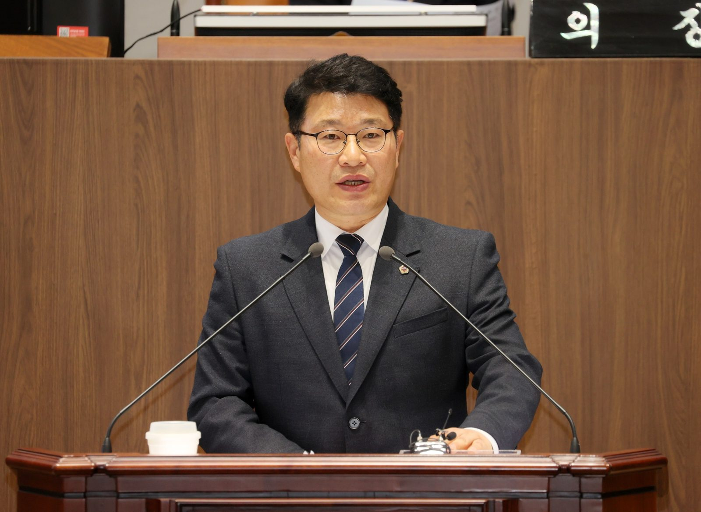

진성범 충남도의원
충남 청년의 고민
충남
청년을 붙잡는
닻
앵커사업: 대학과 지역을 이어
청년이 충남에 취업·정착하도록
돕는 사업
앵커사업 국비 기본지원액
2026년
2027년
국비 699억
→
699
억
2026년 → 2027년

34%
줄었습니다
11월 24일 도정질문에서
감소 원인 확인과
추가 재원을 요구했습니다
취업·정착까지
추적
졸업생의 도내 취업·유지·정착으로
성과를 평가하자고 제안했습니다
청년이 남는
충남
청년이 충남에 남는 것,
숫자로 확인하겠습니다.
진성범 충남도의원 · 기획경제위원회
☎ 041-635-5224
jinsim1.kr